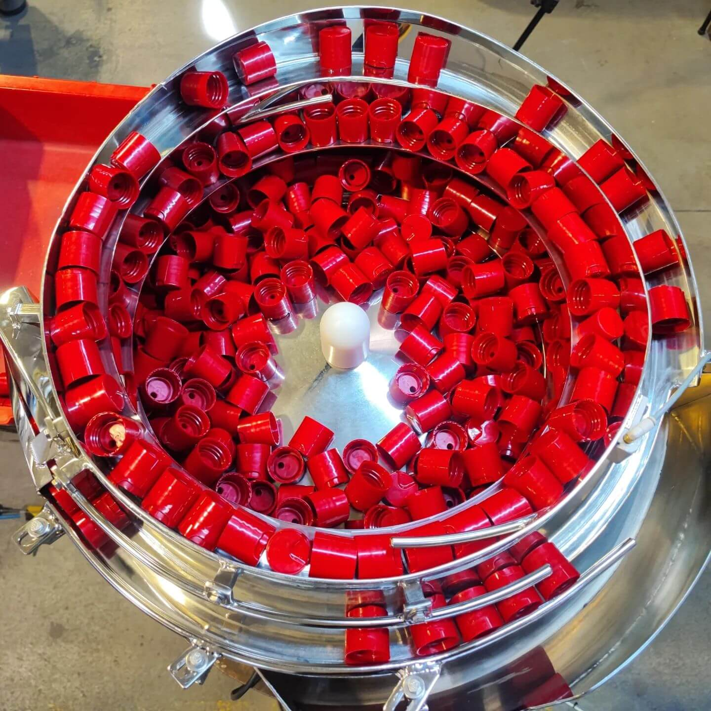

El Primer paso hacia la automatizacion
Equipos vibratorios para la individualización y orientación de partes en la automatización de procesos
CotizacionesEquipos vibratorios para la individualización y orientación de partes en la automatización de procesos
CotizacionesUn orientador de piezas vibratorio se compone de un tazón montado sobre una base vibratoria, respaldado por un sistema de control de vibración. Este dispositivo se utiliza específicamente en la manipulación de piezas a granel, asegurando con precisión que estas se orienten de manera uniforme en una posición consistente.
Los tazones alimentadores vibratorios representan uno de los sistemas más frecuentes y adaptables en el suministro de componentes dentro de la automatización de procesos. Este enfoque garantiza una alineación precisa, lo que resulta crucial en diversas aplicaciones industriales que requieren un posicionamiento preciso de los componentes.
Nuestros equipos se destaca por su eficacia en el tratamiento de una amplia gama de piezas, proporcionando soluciones efectivas en diversas industrias y procesos de fabricación.